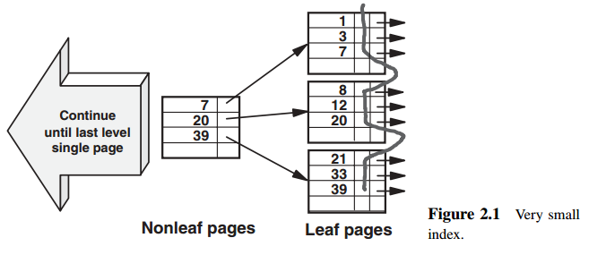
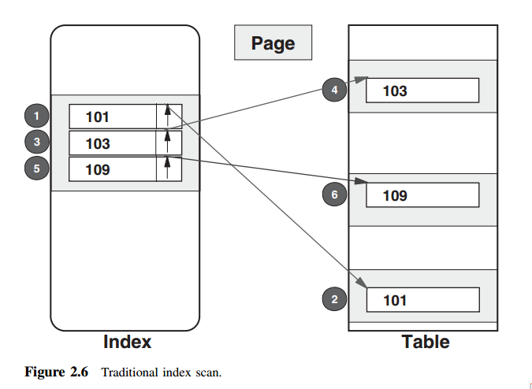

本篇主要分析以下几个问题
- 索引表和原表的物理组织是什么样子的；
- 索引和表的页(page)、索引和表的行(rows)、缓冲池(buffer pool)以及disk cache使用的数据结构；
- 磁盘顺序IO和随机IO的特性；
- 一些辅助式顺序或随机读：包括跳跃式顺序读(skip-sequential), 列表预读(list prefetch)以及数据块预读(data block prefetching);
- 同步IO和异步IO的重要性；
- 各种数据库管理系统的相同点和不同点；
- 页和表聚簇，索引行，索引组织表以及页邻接
- B-Tree的代替者
- 位图索引(bitmap-index)和哈希(hash)
介绍
首先要明确的是，在数据库系统中，索引和数据中的数据全部在一个叫做页(page)的结构中，一般页的大小为4KB，这个大小并不是唯一的。页的大小影响着每个页中的数据的条数(record)以及总的页的数量。并且，每个页都会留出一定比例的空余空间，以满足向其添加新的表行或是索引行的需求。
索引行（index rows）
索引列一般分为两种，根据索引列的值的唯一性分为唯一的和不唯一的两种。主键就是其中一个特殊的唯一的索引列，像学生的学号，或是身份证号码等，也一般都是唯一的，不唯一的就更多的了。对于唯一的索引列来说，一个索引行等同于叶子节点中的一个索引条目，这个索引条目的值就是索引列的值，然后每个索引条目都有一个指向原表中记录的指针。一般来说，页表编号(table page number)是这个指针的一部分。对于非唯一索引来说，一个特定的索引值所对应的索引行应该被想象成独立的索引条目(individual index entries),每一个都含有相同的值，但是却有不同的指针。大多数情况下，非唯一索引的实际存储方式是一个相同的值后带着多个不同的指针，指向原表中的记录。之所以将这些非唯一的索引记录想象成独立的索引条目的好处将在后面介绍。

索引结构(Index structure)
索引的结构一般是B-Tree结构，非叶子节点包含着一个键值以及指向下一层节点的指针，该键值是下一层页的最大值，如图1所示。B-Tree 是一种平衡索引树，因为通过这种索引来查找任何一条记录都需要访问相同数量的非叶子页。
表行(Table Rows)
图1中的每一个索引行都指向了表中的一行记录，这个指针通常都是能够定位这个记录所在的页以及它在页中的位置。同时表中的每一行除了存储行的字段之外，还包含了一些控制信息用于定义行并帮助DBMS处理插入或是删除的操作。
表行在表中存储的顺序，可以和某一个索引的顺序相同，我们平常都叫这个索引为主键。很显然，在众多的索引中，只能够有一个索引的顺序和表的顺序一模一样。其他的索引就无能为力了。这个和表中的数据一个顺序的索引（主键），可以加快查找的过程。而且非常的高效。其他的索引就没有这个高效。。为什么呢？举例来说，在一个没有和表中的数据保持同一个顺序组织的索引，第一条索引行可能指向了数据表的页17，第二个索引行指向了页2，第三个索引行指向了页85…等等。现在虽然索引是顺序的。但是因为索引和数据表并不是按照相同的顺序组织的，使得去访问数据表的时候变成了随机的。这就会非常的低效。
缓冲池和磁盘IO
说白了，缓冲池就是为了能够加快响应时间，并且减少磁盘IO的。如果每次访问的页都能够在缓冲池中，那就不用去磁盘上去找了，显然减少了很多的磁盘IO.缓冲池就是干这个的。你现在仅仅需要知道，数据在不在缓冲池中，访问的成本是不一样的！
从DBMS中的缓冲池中读数据
如果一个索引或是表的页在缓冲池中在找到，那么很显然就不需要去磁盘访问了。只需要处理这些索引或是表中的记录就可以了。成本的大小取决于这些记录是否是DBMS想要的。如果不是，只需要很少的处理；如果是，可能需要稍微多一点的处理。
从磁盘驱动器进行的随机IO
图2展示了一个页从磁盘中读到缓冲池中所需要等待的时间。这个时间大约是10ms。有一点需要注意的是，一个页包含很多的记录，不管你是访问一个页中全部记录，还是部分记录，甚至仅仅是其中一条的记录，你都需要把一整个页全部load到缓冲池中。所以花费都是一样的，大约是10ms。这10ms又是怎么来的呢？
图3很好的解释了这10ms的来历。从图中可以看到，我们假设在这10ms中磁盘实际的繁忙时间是6ms。1ms左右的传输时间是将页从磁盘服务器缓存(disk server cache)移至数据库的缓冲池中. 其余的3ms是对于可能发生的排队时间的估计值，这是基于每秒50次读取的磁盘活动情况得出的。这些数字在实际情况中可能有变化，但是我们需要记住这10ms这一个粗略但是合理的数字即可。
从磁盘服务器缓存(disk server cache)进行读取
磁盘服务器一般都会自带memory(cache)以降低响应时间上的巨大成本。图4展示了从磁盘服务器缓存读取一个表或者索引页的过程。磁盘缓存的作用跟数据库缓冲区的作用一样，磁盘服务器试图将频繁使用的数据保留在内存(cache)中。以降低高昂的磁盘读成本。若DBMS所需的页不在数据库缓冲池中，继而会向磁盘服务器发起请求，磁盘服务器会判断该页是否在反服务器缓存中，只有当它发现页不在磁盘缓存中的时候才从磁盘驱动器上读取该页。如果该页在磁盘服务器的缓冲中，那么花费的时间将会从10ms大幅降低为1ms。
所以，总而言之，当一个索引或表页被请求的时候，它的理想位置是在数据库的缓冲池中。如果它不在那儿，那么下一个最佳的位置就是磁盘服务器的缓存。如果它也不在那儿，那么就必须从磁盘驱动器上进行一个很慢的读取，这一过程可能要花费很长的时间等待磁盘设备空闲下来。
从磁盘驱动器进行的顺序读取
到目前为止，我们仅仅考虑到了将一个索引页或是表页读取到缓冲池中。实际中，不仅仅是读一个单页那么简单。有时候要读很多的页到缓冲池中，并且顺序的处理他们。图5展示了这四种场景。DBMS会意识到多个索引或表页需要被顺序的读取，且能够识别出那些不在缓冲池中的页，随后，它将发出多页IO(multiple-page I/O)的请求，每次请求的页的数量由DBMS决定。只有那些不在缓冲池中的页才会被从磁盘服务器中读取，因为那些已经在缓冲池中的页可能包含了尚未被写入磁盘的更新数据。
顺序的读取页有两个非常重要的优势：
- 同时读取多个页意味着平均每个页的读取时间将会很少。在当前磁盘服务器的条件下，对于4KB大小的页而言，这一个值可能会低至0.1ms(假设磁盘是40MB/s，则一秒能够读 40MB/4KB=10000个页，则每个页花费=1s/10000=0.1ms. 现在磁盘速度已经能够达到100MB/s了，40MB/s还是2004年的数据)
- 预读，由于DBMS事先知道要读取哪些页，所以可以在页被真正请求之前就提前将其读取出来。
图5所使用的术语索引片(index slice)以及聚簇索引(clustering index)将在后面讨论。用于代指上述所描述的顺序读取的术语包括：顺序预读(Sequential Prefetch),多块IO(Multi-Block I/Os)以及多重顺序前读(Multiple Serial Read-Ahead Reads)
辅助式随机读(Assisted Random Reads)
我们从上文中已经看到随机读的代价，并且知道了数据库的缓冲池以及磁盘缓存的作用和好处来降低成本的。还有一些其他的场景也能够降低成本。有时候是自然发生的，有时候是优化器有意为之，我们把它统称为辅助式随机读.注意这并不是DBMS中的术语
自动跳跃顺序读(Automatic Skip-Sequential)
从定义的角度看，如果一系列不连续的行被按照同一个方向扫描，那么访问模式将会是跳跃式顺序的。于是，每行的平均IO时间自然比随机访问时间短，跳跃的距离越短则越节省时间。比如，当表行是通过一个聚簇索引读取时候并且筛选掉一些行的时候，访问模式就是跳跃式顺序读的。这带来的好处有以下两个方面。
- 磁盘服务器注意到对某一驱动器的访问是顺序的(或者几乎是顺序的)，于是服务器开始提前预读几个页。
- DBMS可能注意到select语句正在以顺序或是几乎顺序的方式访问索引或页表，于是DBMS开始提前预读多个页，这在DB2 for z/OS中被称为动态预读。
列表预读(List Prefetch)
在之前的例子中，由于索引行和表行的顺序都是一致的，所以很方便的做到了自动跳跃顺序读。事实上DB2 for z/OS 也能够在索引行和表行顺序不一致的情况下主动创造跳跃式顺序读。为了做到这一点，它事先需要访问满足条件的所有的索引行。然后按照表页的顺序对其进行排序后在访问表行。图2-6和图2-7对不使用和使用列表预读进行了对比，图中的数字代表了操作顺序。

数据块预读(Data Block Prefetching)
当表行和索引行的访问顺序不一致的时候，Oracle中就会使用数据块预读这一特性。在这种方式下，如图2-8所示，DBMS首先从索引片上收集指针，然后在进行多重随机IO来并行的读取表行。如果第4，5，6步所代表的表行分别位于三个不同的磁盘驱动器上，那么这三个随机IO将会被并行执行。就像列表预取一样。
注释：数据库预读就是并行的列表预读。
在结束辅助式随机读的话题之前，还需要考虑一下结果集的顺序。一个索引也许能够自动提供正确的顺序，但是上述所讨论的机制也许会在访问表行之前就破坏了这一顺序，因此，也就需要对结果集进行一次排序。
注释：就像设计HBase中IRIndex中索引预读，然后进行排序一样。
评注
本书主要提及三种类型的读IO操作:同步读、顺序读以及辅助式随机读。需要提及的是SQL Server使用术语索引前读(Index Read-Ahead), Oracle使用术语索引跳跃扫描(Inedx Skip Scan)。前者是指提前向前读取下一组叶子页，而后者是指读取多个索引片而不进行全索引扫描。
辅助式顺序读(Assisted Sequential Reads)
当要扫描一个大的表的时候，优化器可能会选择开启并行机制。例如，它可能会将一个游标拆分为多个用范围谓词限定的游标，每一个游标扫描一个索引片。当有多个处理器和磁盘驱动器可用的时候，所花费的时间将相应的减少。我们将在第15章讨论这个话题。请注意，辅助式顺序读这个术语同样也未被任何一个DBMS使用过。
同步和异步IO(Synchronous and Asynchronous I/Os)
术语同步是指在进行IO操作的时候，DBMS不能继续进行其他的操作，必须等待，直至IO操作完成。
异步读指的是当前页尚在处理的时候就被提前发起了，这一处理时间和IO时间之间可能有很大的一部分重叠。理想情况下，在这些页被实际处理之前，异步IO就已经完成了。每一组页都是以这种方式被预读然后再处理。图2-9展示了这一过程。注意的是，整个预读过程从一次同步读开始，然后才开始预读过程，以此来最小化首次读取的等待时间。
#